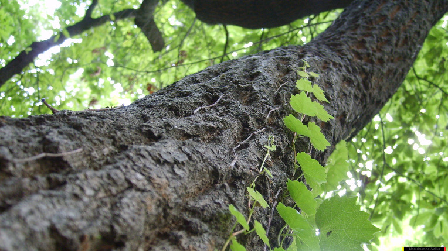

 토양 자동 급수 장치 자동으로 물을 급수합니다. Soil Moisture Sensor, 토양의 수분을 감지하여 센서값을 출력합니다. (Click) 밑줄 표시는 링크와 다운로드 기능을 가지고있습니다.
토양(土壤) 흙 식물의 뿌리는 양분과 수분을 흡수하여 생장. 식물이 토양의 양분과 수분을 원할하게 흡수하기 위해서 가장 좋은 토양의 습도(70%)를 유지, 그리고 완벽한 타이밍에 급수.
식물(植物) 반려식물 전 세계의 식물은 현재 39만여종에 이른다. 현대인의 외로움을 치유시켜 주는 식물, 심리적 안정 및 기분전환 효과를 기대하고 그들의 정신건강에 도움을 줄 수 있습니다.
물(水) 생명의 근원 물은 식물생장에 있어서 매우 중요한 구성요소. 토양습도 센서에서 측정되는 값을 LCD모니터에 연결하여서 출력 그리고 펌프를 이용하여서 할당된 값에 달성시 물이 급여되는 시스템을 구현합니다.
Smart Farm(IoT) 농업의 새로운 혁명 농업 + 사물 인터넷(IoT) 각종 사물에 센서와 통신 기능을 내장하여 인터넷에 연결하는 기술. 무선 통신을 통해 각종 사물을 연결하는 기술을 의미한다.
What is Arduino? 오픈소스 하드웨어 전자 장치 및 소프트웨어를 설계, 전 세계 사람들이 물리적 세계와 상호 작용하는 첨단 기술, 간단하고 강력하며 학생에서 제작자 및 전문 개발자에 이르기까지 사용자의 요구를 충족한다.